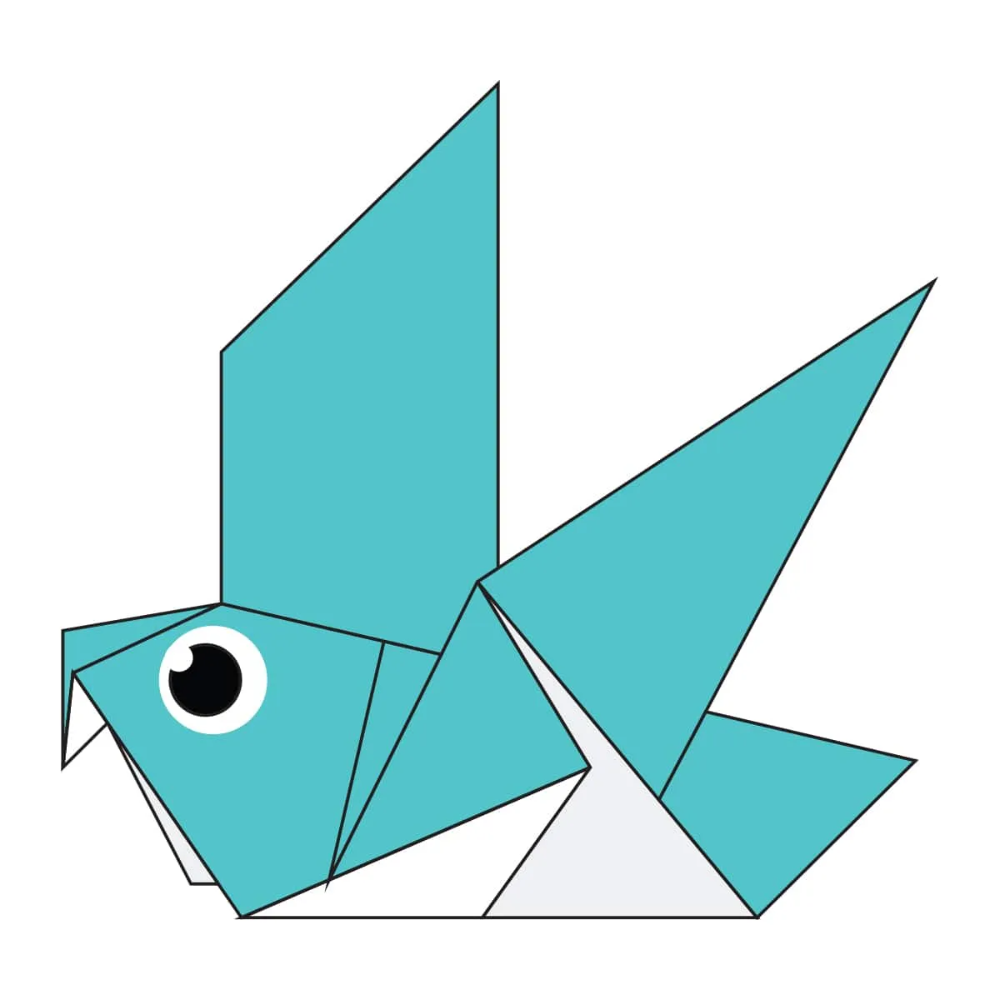

Diseños de Origami
Acerca de nosotros
Síguenos

Datos interesantes sobre el Camello
- La joroba del camello almacena grasa, no agua
- Tiene las pestañas muy largas para que no le entre arena

Datos interesantes sobre el Camaleón
- Su lengua puede llegar a medir el doble de su tamaño
- Pueden girar los ojos 180 grados
- Puede ver en dos direcciones a la vez

Datos interesantes sobre la paloma
- Pueden ver bien a una distancia de 40 kilómetros
- En el siglo XVII sus excrementos se usaban para hacer pólvora

Datos interesantes sobre los osos
- Son animales carnívoros
- Pueden vivir en muchos lugares del mundo